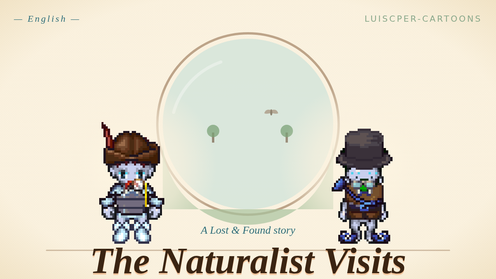

Audio story · Ages 4–8
The Naturalist Visits

When a hushed old naturalist arrives at the Lost & Found missing the last page of his field journal, hurried young sorter Mira has to slow down enough to discover he's lost something quieter, too.
This is the soundtrack of our cartoon “The Naturalist Visits”: the same voices, music and sounds. Turn the screen off and listen together, in the car, at bedtime or while drawing.
- 👧 Ages 4–8
- ⏱ 4 min 6 s
- 🗣 In English
- ✓ Free, no signup
Share this page
Send this link to another family.
Podcast feed
To follow it in a podcast app, copy this address and add it in the app.
Transcript
Everything the characters say, in order.
Setup(The Sorting Floor)
Mira: Okay-okay-okay! New visitor! Hi! Welcome! What did you lose? A mitten? A name? A wiggly tooth? We get lots of wiggly teeth.
Mr. Pemberton Quill: Hello. I have lost… a small page. The last page. From my little book.
Mira: A page! Got it. Paper. Last-page-of-a-book. Easy. Color? Size? Pocket-size? Big-as-a-plate?
Mr. Pemberton Quill: …Pocket-size. With a drawing on it. Of a beetle. A very small beetle, just here—
Mira: Beetle-page, beetle-page, okay! I'll find it!
Rising(The Window Out)
Mira: The Window Out shows where you lost it. Hold the thing — er, hold the idea of the thing — and look. Ready? Go!
Mira: Moss. Got moss. Lots of moss. Where's the page where's the page— I don't see paper. I see… leaves. More leaves. Boring leaves. — sorry — interesting leaves.
Mr. Pemberton Quill: …and here, just here, a small thing is waking up.
Mira: What?
Mr. Pemberton Quill: Wait. There. A drop of water. It rolls. The fern bends. A tiny brown beetle steps out.
Mira: I don't see a— oh. Oh. Okay there is a beetle. It's so small. How did you see that?
Mr. Pemberton Quill: I noticed.
Mira: You — what'd? You noticed?
Mr. Pemberton Quill: To notice is to look slowly. To let a small thing arrive.
Mira: Huh.
Climax(back on The Sorting Floor → The Comfort Couch)
Mira: Okay-okay-okay, plan! I run the belts, I check the paper bin, I check the drawings bin, I check the beetle-drawings sub-bin, easy peasy—
Mr. Pemberton Quill: …I think I have lost something else.
Mira: GOT IT! Beetle page! Last page! Mister — Mister Tall-Quiet-Man — I FOUND IT!
Mr. Pemberton Quill: …Thank you.
Mira: …You okay? You don't look done.
Mr. Pemberton Quill: No. I do not feel done.
Mira: Did you lose two things?
Mr. Pemberton Quill: I think I lost the part of me that finds them. The part that waits. The part that — notices. It's been a noisy week. I came in here in such a hurry I left it on the way.
Mira: Okay. Tell me about the beetle again.
Resolution(The Comfort Couch)
Mr. Pemberton Quill: …a drop of water. It rolls. The fern bends. A tiny brown beetle steps out. Its back is shiny. It stops. It thinks a beetle thought. Then it goes on.
Mr. Pemberton Quill: …there it is.
Mira: There what is?
Mr. Pemberton Quill: The quiet noticing. It came back. It was here all along. It just needed somebody to sit still with it.
Mira: I sat still.
Mr. Pemberton Quill: You did. Thank you, Mira. You found two things.
Mira: Two-for-one! Best sort all week! …I mean. I'm glad.
Tag(The Sorting Floor)
Mr. Pemberton Quill: Try it tomorrow. Pick one small thing. A crumb. A crack in the floor. A bit of fluff on a mitten. Look at it for as long as it takes a cloud to move.
Mira: Okay-okay— …okay.
Mira: …I noticed you.
Credits
- Story and cartoon: Lost & Found Cartoons.
- Music and sounds: Lost & Found Cartoons.
- Pictures: pixel art from the LPC Universal Sprite library, CC-BY-SA (artist credits).